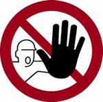
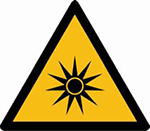
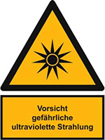

Warn- und Hinweiszeichen
Kennzeichnung gemäß Arbeitsstättenregel A1.3 "Sicherheits- und Gesundheitsschutzkennzeichnung" (ASR A1.3)

D-P006 aus ASR A1.3: Zutritt für Unbefugte verboten
M004: Augenschutz benutzen
M009: Handschutz benutzen
M010: Schutzkleidung benutzen
M013: Gesichtsschutz benutzen

W027: Warnung vor optischer Strahlung

Warnschild mit Hinweisschild: Vorsicht gefährliche ultraviolette Strahlung